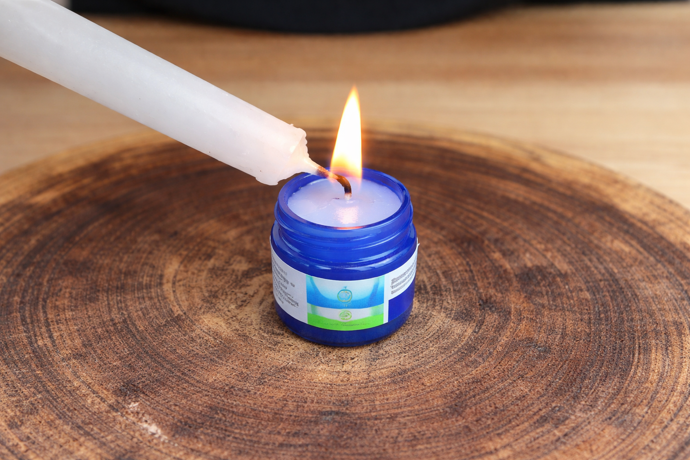

The "Vapor Rub Routine": Why This Nighttime Ritual Is Going Viral Among People With Ear Ringing
As the world gets quieter at night, internal sounds often become louder. Wellness communities are now buzzzng about a simple menthol-based habit.
For millions of people, the most difficult time of day isn't the morning rush—it’s the moment their head hits the pillow. In the absence of daily noise, a persistent, phantom ringing or buzzing can suddenly feel amplified.

Recently, a peculiar trend dubbed the "Vick Routine" has gained significant traction on social media and wellness forums. Users describe applying a small amount of mentholated vapor rub to the area around the ear before sleep.
Why Is It Going Viral?
The theory behind this habit isn't that it "cures" the ears, but rather that it creates a sensory distraction. The cooling sensation of menthol and the strong eucalyptus aroma may provide a "competing" signal to the brain, momentarily shifting focus away from the internal ringing.
The Limits of Topical Rituals
While many find temporary comfort in these topical "hacks," wellness experts suggest that they only address the surface level of the issue. The perception of sound without an external source is often linked to the complex way our auditory nerves and brain interact.
Because of this, the conversation in the wellness community is shifting. More people are looking past "external tricks" and focusing on internal support—specifically, how certain natural compounds and nutrients can support ear health and nerve function from the inside out.

If you’ve tried the "vapor rub trick" or white noise machines and are looking for a more comprehensive approach to auditory wellness, there is a new method gaining attention. This approach focuses on the biological triggers of ear ringing rather than just masking the sound.
Beyond the "Vick Routine"
Discover the 30-second morning habit that works from the inside out to support ear health and quiet the mind.
LEARN MORE